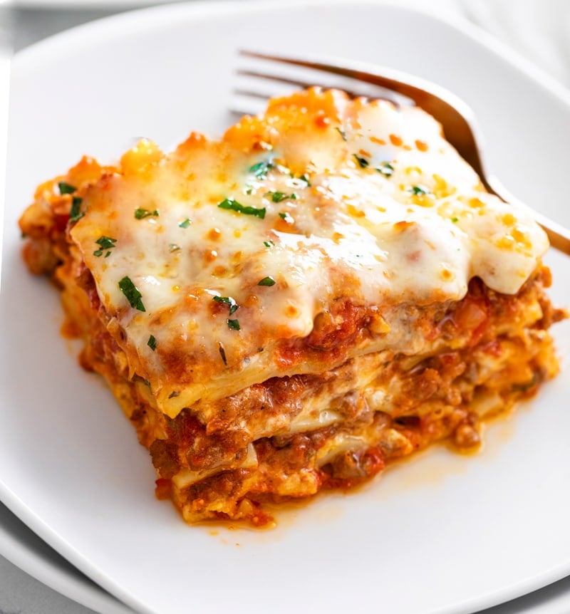

Lasagna

- 2 ½ cups warm water(600 mL)
- 1 teaspoon sugar
- 2 teaspoons active dry yeast
- 7 cups all-purpose flour(875 g), plus more for dusting
- 6 tablespoons extra virgin olive oil, plus more for greasing
- 1 ½ teaspoons kosher salt
- ¼ cup semolina flour(30 g)
- 1 pound ground beef chuck
- 1/2 medium onion, diced (about 3/4 cup)
- 1/2 large bell pepper (green, red, or yellow), diced (about 3/4 cup)
- 2 cloves garlic, minced
- 1 (28-ounce)can good-quality tomato sauce
- 3 ounces tomato paste (half a 6-ounce can)
- 1 (14 ounce) can crushed tomatoes
- 2 tablespoons chopped fresh oregano, or 2 teaspoons dried oregano
- 1/4 cup chopped fresh parsley (preferably flat leaf), packed
- 1 tablespoon Italian seasoning
- 1 tablespoon red or white wine vinegar
- 3 ounces tomato paste (half a 6-ounce can)